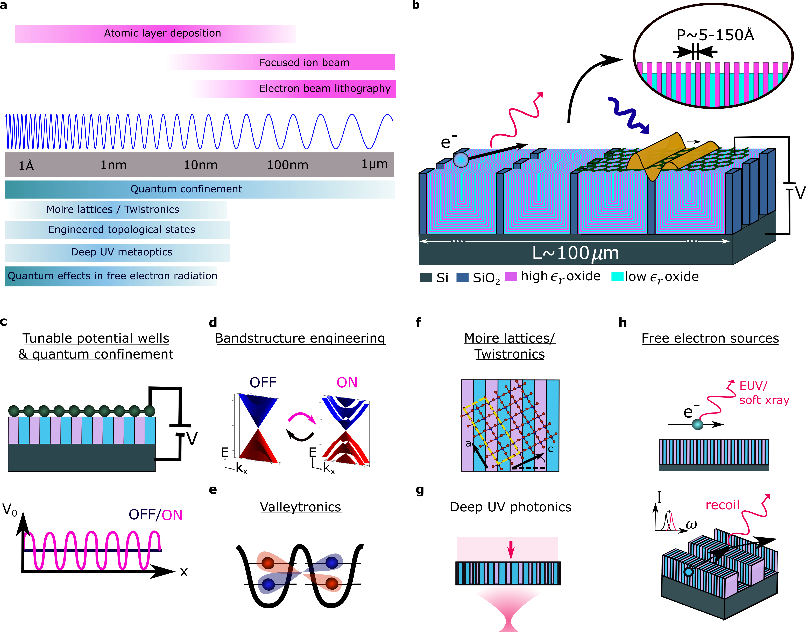

The behavior of particles in matter can be controlled by the environment in which they live: this simple observation is at the heart of many techniques in band structure engineering, whether it be for electrons in an atomic lattice, or photons propagating in a photonic crystal or through a metasurface. However, this control is not limited to fundamental particles such as photons and electrons but also extends to quasi-particles, such as phonon-polaritons, that are formed by the coupling of light and matter.
While the behavior of 2D materials already differs significantly from their 3D counterparts, leading to exceptional optical properties such as superconductivity, unique band structures, and electrically tunable optical responses, they can be further engineered by a direct patterning of the 2D material or its immediate surrounding. I am interested in integrating 2D materials with arrays of nanophotonic structures for a new generation of integrated light-sources and detectors.
In [1], we for instance patterned the substrate below a hexagonal boron nitride (hBN) flake to create refractive- and metaoptics for phonon-polaritons (Figure 1) for programmable miniaturized integrated optoelectronic devices and on-demand biosensors. However, the potential of integrating 2D materials and nanostrucutes extends far beyond, especially regarding the wealth of newly emerging 2D materials with exotic optical responses and the continuous miniaturization of nanostructure features, expanding the range of accessible frequencies of light matter interaction.Accessing new regimes of light-matter interaction in 2D materials ultimately requires pushing fabrication to its absolute limits. In [3], we address this by developing a scalable nanofabrication platform that achieves in-plane feature sizes down to 1.75 nm — far beyond what conventional lithography allows. The approach repurposes atomic layer deposition (ALD) as a surface structuring tool: by combining precise thickness control with widely spaced oxide nanofins, we produce nanolaminates with sub-10 nm periodicities over large areas. When integrated with graphene and used as a gate array, the platform enables direct modulation of the electronic band structure, evidenced by satellite Dirac peaks and signatures of quantum confinement. This could open a new route toward controlling charge carriers, polaritons, and short-wavelength light-matter interactions in 2D materials at length scales that were previously out of reach [3].

Rewritable metaoptics for phonon-polaritons [1]: The dispersion of phonon polaritons in hexagonal boron nitride (hBN) can be controlled through a patterning of the surrounding material. (a-c) Phase change materials (PCMs) have two material phases of drastically different refractive indices that can be switched in between optically and electrically. They are hence a great candidate to reconfigurably control the propagation of excitations in 2D materials. In [1], we place a hBN flake onto a PCM (here, GST) and locally change its refractive index using a custom-built laser writing setup. (c) the phonon-polariton mode extends into the superstrate and substrate and allows for the implementation of 2D refractive and meta-optical elements when writing (sub-) wavelength sized patterns into the substrate. (d-h) Example of a 2D metasurface focusing the phonon polariton mode to its diffraction limit. The structure was erased and rewritten in between metasurfaces 1 and 2.

Nanolaminate platform to attain extreme regimes of light-matter interactions [3]. (a) Comparison of feature sizes accessible to various nanofabrication techniques (pink) against physical phenomena that become significant at corresponding length scales (blue). (b) Schematic of the proposed platform, relying on widely spaced oxide pillars to transform sub-nm thick layers grown by atomic layer deposition (ALD) into a nanolaminated surface. (c–h) Applications in extreme light-matter interactions: (c) tunable superlattices for controlling electron confinement in 2D materials; (d) band-structure engineering via an imposed periodic potential; (e) quantum dot formation, valleytronics and exciton confinement at the sub-10 nm scale; (f) substrate-controlled moiré superlattices for twistronics; (g) photonic control in the deep UV; (h) free-electron radiation sources accessing soft x-ray to near-UV regimes where quantum recoil effects become significant.
Related publications: * denotes equal contribution
[1] Chaudhary, K.*, Tamagnone, M.*, Yin, X.*, Spaegele, C.M.*, Oscurato, S.L., Li, J., Persch, C., Li, R., Rubin, N.A., Jauregui, L.A. and Watanabe, K., 2019. Polariton nanophotonics using phase-change materials. Nature communications, 10(1), p.4487. [2] Tamagnone, M., Chaudhary, K., Spaegele, C.M., Zhu, A., Meretska, M., Li, J., Edgar, J.H., Ambrosio, A. and Capasso, F., 2019. High quality factor polariton resonators using van der Waals materials. arXiv preprint arXiv:1905.02177. [3] Spaegele, C.M. et al. A scalable platform for nanometer-scale quantum confinement. (in review)